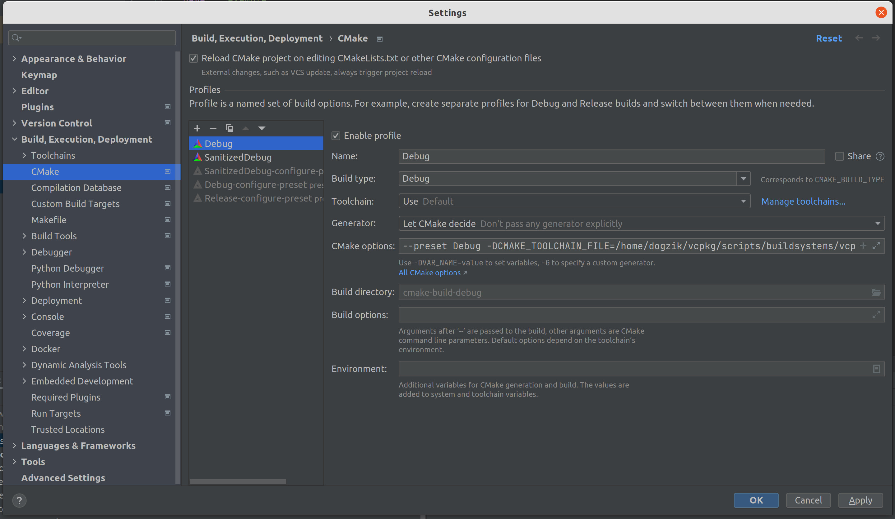

О курсе
Данный курс читается студентам кафедры КТ в университете ИТМО.
Лектор — Иван Сорокин @vanyacpp
Преподаватели практики и контакты:
- Лев Довжик @Dogzik
- Артём Котóн @dedlocc
- Егор Макаревич @Flarembo
- Кирилл Санников @KirillSanik
- Тимофей Иванов @PurrVessel
- Иван Медведев @spcc02
Организационные вопросы
- Discord & Telegram Chat — можно получить у преподавателей. Там можно найти все объявления и актуальные ссылки, а также задавать вопросы
- Twitch — стримы лекций
- YouTube — записи лекций
- cpp-notes — конспекты студентов прошлого года. Приветствуются правки и дополнения
Баллы
Подробнее о балльно-рейтинговой системе:
- Оценка состоит из ваших баллов за практические, домашние задания и экзамен.
- Без успешной сдачи экзамена вы не можете получить положительную оценку (то есть, выше FX), иначе говоря:
auto score = combine(practice, hw) + exam;
auto bars = (exam > 0) ? score : std::min(score, 59);
// bars -> bars.itmo.ru
- При необходимости система может меняться в течение семестра в любую из сторон.
- Разбалловка:
- Практика и Домашние задания — суммарно 86 баллов.
- Практические задания — Несколько небольших заданий, о которых вам расскажут преподаватели на отдельной паре, напишут какую-то часть кода, ответят на вопросы. Выполняются обычно за 3-7 дней, отправка любых посылок по практикам после дедлайна невозможна (исключение: доп. сессия).
- Домашние задания — Задания, которые будут выдавать в течение семестра для полностью самостоятельного выполнения. Для каждой будет отдельный дедлайн, за просрочку которого будет штраф на количество баллов за задачу (подробнее о штрафах ниже).
- Первичные баллы за практику и ДЗ преобразуются в баллы по БаРС по следующей формуле: \[ B = \sqrt{\frac{P}{M_P}} \cdot \frac{H}{M_H} \cdot 86 \]
- \( P \) — набранный первичный балл за все практики
- \( M_P \) — максимальный первичный балл за все практики
- \( H \) — набранный первичный балл за все ДЗ
- \( M_H \) — максимальный первичный балл за все ДЗ
- Таким образом, чтобы получить ненулевой балл за практику и ДЗ, нужно решать и то, и другое.
- Экзамен — 20 баллов. Состоит из практической и теоретической частей, каждая стоит по 10 баллов.
- В практической части вам даётся задание, по сложности сопоставимое с типичной практикой, но для самостоятельного выполнения в течение нескольких часов. Задание оценит преподаватель.
- В теоретической части экзамена вы отвечаете на вопросы по курсу.
- Чтобы получить положительную оценку за курс, нужно успешно сдать каждую из частей экзамена.
- Итого 106 баллов. В оценку переводятся в соответствии с БаРС.
- Практика и Домашние задания — суммарно 86 баллов.
- Баллы за ДЗ считаются по формуле: \[ h = S \cdot M_h \cdot \left(0.6 + \frac{0.4}{1 + 0.35 \cdot D} \right)\]
\[ D = \left\lceil \frac{d}{3} \right\rceil \]
- \( M_h \) — максимальный балл за задачу
- \( S \) — ваша оценка за задачу
- \( d \) — кол-во дней прошедших после дедлайна до вашей посылки
- Оценки за ДЗ. Для простоты переведены в символьную систему
| Symbol | Description | Score |
|---|---|---|
| + | Задание выполнено | 1 |
| +- | Есть недочёты | 0.8 |
| -+ | Много недочётов | 0.6 |
| - | Плохо | 0 |
| / | Не проверялось | 0 |
- Штрафы распространяются на любые посылки после дедлайна, даже правки. Штрафа на количество посылок нет.
- Сдать ДЗ с первого раза скорее всего не получится, и это нормально. Мы все тут ещё учимся.
- Проверка занимает достаточно ненулевое время. Тот факт, что вы сдали до дедлайна, не означает, что вы успеете и исправить до него. Чаще всего чем ближе дедлайн, тем больше время проверки в силу увеличивающейся очереди посылок. Рекомендуется сдавать как можно раньше, чтобы получить больше шансов на проверки правок до дедлайна.
- Оценку
/можно получить, например, за проблемы оформления или непройденные тесты.
Пример. Пусть дано домашнее задание, которое оценивается при полном выполнении в 10 баллов. В таблице ниже отражено поведение формулы для рассчёта баллов в зависимости от переменных. Пусть дедлайн сдачи — 1 марта, 23:59. Тогда:
| Timestamp \ Symbol | + | +- | -+ | - |
|---|---|---|---|---|
| 1 марта, 23:59 | 10 | 8 | 6 | 0 |
| 2 марта, 00:00 | 8.96 | 7.17 | 5.38 | 0 |
| 4 марта, 23:59 | 8.96 | 7.17 | 5.38 | 0 |
| 5 марта, 00:00 | 8.35 | 6.68 | 5.01 | 0 |
| 20 апреля, 12:00 | 6.58 | 5.26 | 3.95 | 0 |
| 1 сентября, 12:00 | 6.18 | 5.07 | 3.71 | 0 |
IDE и пакетный менеджер
IDE
Вы можете использовать IDE по вкусу для выполнения практик/домашних заданий.
Но чтобы ваш код был в определенном стиле и при написании кода вы быстро увидели опечатки/минорные баги - вам предоставлены .clang-tidy и .clang-format файлы в репозиториях.
В подразделах описаны этапы конфигурации некоторых IDE (рекомендуется Clion).
Пакетный менеджер
Пакетный менеджер нужен для упраления зависимостями в проекте. В рамках данного курса мы будет использовать для этих целей vcpkg.
vcpkg - это не только инструмент, но и репозиторий с рецептами пакетов, который нужно склонировать.
git clone https://github.com/microsoft/vcpkg
./vcpkg/bootstrap-vcpkg.sh
или .\vcpkg\bootstrap-vcpkg.bat для Windows
Далее будет удобно добавить ./vcpkg/vcpkg в PATH:
sudo ln -s "$(pwd)/vcpkg/vcpkg" /usr/bin/vcpkg
Самая главная команда vcpkg:
vcpkg help
Чтобы узнать список установленных библиотек, используйте:
vcpkg list
Для поиска конкретного пакета можно воспользоваться vcpkg search, например:
vcpkg search benchmark
benchmark 1.6.0#1 A library to support the benchmarking of functions, similar to unit-tests.
celero 2.8.2#1 Celero is a modern cross-platform (Windows, Linux, MacOS) Microbenchmarkin...
hayai 2019-08-10#1 C++ benchmarking framework
...
Поиск рецептов будет осуществляется в скачанном репозитории, так что если ваши рецепты устарели - сделайте git pull.
Чтобы обновить пакеты помогут команды vcpkg update и vcpkg upgrade. Обновите установленные пакеты:
vcpkg upgrade --no-dry-run
Установить пакет можно при помощи команды vcpkg install:
vcpkg install benchmark
Эта команда по умолчанию соберёт выбранный пакет в Release и Debug конфигурациях. Чтобы понять что и как будет собираться для выбранного пакета, можно заглянуть ./vcpkg/ports/PACKAGE_NAME. Чтобы понять в какой конфигурации — ознакомьтесь с vcpkg help triplets, а также со скриптами триплетов, которые находятся в ./vcpkg/triplets/.
По умолчанию на Windows используется MS тулчейн (MSVC/clang-cl), для работы с MinGW нужно явно указать параметр --triplet=x64-mingw-dynamic при выполнении vcpkg install
После исполнения команды, вам скорее всего подскажут как использовать этот пакет, вроде:
find_package(benchmark CONFIG REQUIRED)
target_link_libraries(main PRIVATE benchmark::benchmark benchmark::benchmark_main)
Если вы повторите команду vcpkg install, то он напишет, что пакет установлен, и продублирует сообщение find_package(.... И если вы добавите этот код в ваш CMakeLists.txt, то ничего не заработает!
Нужно подсказать CMake где хранятся find-package скрипты из vcpkg. Для этого используется следующий флаг при конфигурации cmake (D:\src\vcpkg в данном примере в качестве полного путь до vcpkg директории, замените на свой!):
-DCMAKE_TOOLCHAIN_FILE=D:\src\vcpkg\scripts\buildsystems\vcpkg.cmake
Также, если вы пользуетесь Windows нативно (т.е. не WSL), нужно добавить -DVCPKG_TARGET_TRIPLET=x64-mingw-static для тулчейна MinGW и -DVCPKG_TARGET_TRIPLET=x64-windows-static для тулчейна MSVC/clang-cl
В дополнение к ручной остановке пакетов можно в каждом проекте создать манифест в файле vcpkg.json, в котором явно перечисляются все зависимости. CMake, интегрированный с vcpkg, как было показано выше, в таком случае сам установит и соберёт все необходимые зависимости. В нашем в курсе используется именно этот вариант.
Локальное окружение на Windows (WSL) для домашних заданий и практик
Данный гайд предназначен для людей с Windows, которые хотят пользоваться преимуществами Linux (например, edb-debugger).
Требования к Windows
Использовать данные фичи можно только на Windows 10 Build 19044+ или Windows 11. Если у вас версия Windows меньше 10, то к сожалению данный способ для вас недоступен. В случае если у вас Windows 10, рекомендуется обновить её до последней версии.
Также необходимо иметь драйвера последней версии.
Установка WSL и Ubuntu
Для начала откроем командную строку и введем туда команду:
wsl --install
Эта команда утсановит вам какой-то дистрибутив Linux в качестве подсистемы. Если вас не устраивает "какой-то" дистрибутив, можно сначала проверить, какие дистрибутивы доступны при помощи команды
wsl --list --oneline
А потом запустить установку конкретного из них командой
wsl --install <DistributionName>
Очень советую устанавливать Ubuntu-22.04, нежели что-нибудь другое.
После установки нужно ввести wsl --update и wsl --set-default-version 2.
Сразу после рекомендуется перезагрузить компьютер.
После этого вы можете найти в поисковой строке Ubuntu и запустить её. Понадобится некоторое время на предварительную инициализацию.
Первый вход в Ubuntu, обновление и установка нужных утилит
При первой загрузке Ubuntu вам предложат придумать себе логин и пароль. Пароль надо запомнить, так как он понадобится для работы в привилегированном режиме.
Далее обновим систему и пакеты при помощи команд:
sudo apt update && sudo apt upgrade
Тут у нас попросят sudo password. Это и есть тот пароль, который вы вводили при первой загрузке.
Если понадобится установить какой-то пакет (например, вы любите sublime text), то можно это сделать при помощи команды вида sudo apt install XXX, где XXX - имя нужного вам пакета.
Для практики по ассемблеру, вам понадобятся nasm и дебаггер edb, установите их при помощи следующей команды:
sudo apt install nasm binutils edb-debugger xterm
Для проверки работоспособности напишите edb в консоль, после чего он должен открыться в отдельном окне.
Полезные ссылки
Установка и настройка окружения на Mac для практик и домашних заданий на ассемблере x86_64
План действий эмуляции x86_64 и запуска edb-debugger и ассемблера.
Установка UTM и эмуляция x86_64
Необходимо скачать и установить UTM, а так же образ ubuntu, в целом можно и другой образ.
Далее добавляем виртуальную машину в UTM. Если у вас apple silicon, т.e. на архитектуре ARM, выбираем emulate. Если у вас mac на intel, можно выбрать любую опцию, но быстрее будет virtualize. После следуем по всем шагам установки и настраиваем под себя. Так же для более плавной работы в настройках виртуальной машины можно увеличить количество ядер и прожать опцию Force multicore.
Настройка ubuntu и установка утилит
Обновляем систему и пакеты
sudo apt update && sudo apt upgrade
Для практики по ассемблеру, вам понадобятся nasm и дебаггер edb, установите их при помощи следующей команды:
sudo apt install nasm binutils edb-debugger xterm
Для проверки работоспособности напишите edb в консоль, после чего он должен открыться в отдельном окне.
Если у вас вылез данный warning:
Warning: Ignoring XDG_SESSION_TYPE=wayland on Gnome. Use QT_QPA_PLATFORM=wayland to run on Wayland anyway.
Может помочь прописать:
export QT_QPA_PLATFORM=wayland
sudo apt install qtwayland5
CLion
Крайне рекомендуется пользоваться EAP версией, ибо имеено в ней все свежие фиксы и фичи.
Установка
На официальном сайте (ссылка в header-e - кликабельна) можно найти информацию об установке через Toolbox (если вы используете другие IDE от Jetbrains) или об установке на Windows.
На Ubuntu рекомендуется следующий процесс установки (чтобы можно было обновлять среду разработки через пакетный менеджер):
$ sudo apt install snap
$ sudo snap install clion --classic
clang-tidy
Clion имеет встроенный clang-tidy, но вы можете указать внешний, если он есть на вашей системе.
Нужно убедиться, что вы поставили галочку на
Prefer .clang-tidy files over IDE settingsчтобы использовать .clang-tidy курса.
Path: Settings / Preferences | Editor | Inspections - C/C++, General, Clang-Tidy

clang-format
Clion имеет встроенный (альтернативный) clang-format, но вы можете указать внешний, если он есть на вашей системе.
Нужно убедиться, что вы поставили галочку на
Enable ClangFormat (only for C/C++/Objective-Cчтобы использовать .clang-format курса.
Path: Settings / Preferences | Editor | Code Style - ClangFormat

Либо другой, более быстрый вариант. В нижней панели экрана, поставить соотвествующую галочку.

Интеграция с vcpkg и CMake preets
Для начала нам нужно попасть в окно конфигурации CMake. Это происходит автоматически при первом открытии проекта или же можно найти в File->Settings->Build,Execution...->CMake

Для интеграции с vcpkg вне зависимости от сборки вам нужно в CMake options добавить -DCMAKE_TOOLCHAIN_FILE=<path-to-vcpkg>/vcpkg/scripts/buildsystems/vcpkg.cmake
Также, если вы пользуетесь Windows нативно (т.е. не WSL), нужно добавить -DVCPKG_TARGET_TRIPLET=x64-mingw-static для тулчейна MinGW и -DVCPKG_TARGET_TRIPLET=x64-windows-static для тулчейна MSVC/clang-cl.
Дело в том, что по умолчанию vcpkg на Windows использует MS тулчейн и установленные с ним библиотеки не будут линковаться при сборке с тулчейном MinGW.
Далее добавляем три основные конфигурации, каждый раз нажимая на плюсик для создания новой конфигурации:
- Release
Build type:Release- В
CMake optionsдобавляем--preset Release
- SanitizedDebug
Build type:Debug- В
CMake optionsдобавляем--preset SanitizedDebug
- RelWithDebInfo
Build type:RelWithDebInfo- В
CMake optionsдобавляем--preset RelWithDebInfo
Если после добавление конфигураций CMake падает с ошибкой при попытке сконфигурироваться, то нужно в каждой конфигурации указать в качестве Build directory папку вида cmake-build-<configuration-name>
Полезные ссылки
- Выбор конфигурации сборки. Чем сборка в дебаге отличается от сборки в релизе, рассказывают в 3 семестре на курсе операционных систем.
- Valgrind memcheck: проверки утечек памяти и т.д.
QtCreator
Установка
Есть мануал на официальном сайте (ссылка в header-e - кликабельна). Здесь можно найти offline установщики Qt (в который собственно и входит Creator) для Windows и Linux/MacOS.
На Ubuntu рекомендуется следующий процесс установки (чтобы можно было обновлять среду разработки через пакетный менеджер):
$ sudo apt install qtcreator
clang-tidy
QtCreator имеет встроенный clang-tidy, но вы можете указать внешний, если он есть на вашей системе.
Чтобы использовать .clang-tidy курса, к сожалению, нужно будет копипастнуть наш файлик в Edit checks as string (смотрите конец инструкции в header - e)
До настроек clang-tidy можно добраться через Tools -> Options -> Analyzer -> Diagnostic Configuration

Там нужно будет создать копию и нажать Edit checks as string, куда вставить содержимое нашего файлика.

clang-format
Для установки автоматического форматирования кода в QtCreator нужен плагин Beautifier. О том как его установить можно почитать по ссылке.
Рекомендуем поставить галочку на
Enable auto format on file save
После перезапуска QtCreator идем в Tools -> Options -> Beautifier -> ClangFormat. Если у вас не стоит clang-format, его нужно поставить, в Ubuntu это sudo apt install clang-format. Далее в Options в Use predefinde styles выбираем опцию File вместо LLVM

Инструкция по сдаче заданий
В рамках курса вам будут предложены домашние задания и практики. В большинстве случаев сдача происходит с помощью GitHub.Classroom.
Вам необходимо настроить взаимодействие с репозиторием через SSH-ключи по инструкции от Github. В дальнейшем ВСЕ ссылки на репозитории, в частности для клонирования, должны быть в формате ssh. В противном случае у вас сломается настройка репозитория.
Настройка репозитория с заданием
- К каждому заданию будет приложена инвайт-ссылка на GitHub Classroom, после перехода по ней у вас создастся приватный репозиторий со стартовым кодом, тестами и конфигурациями. Склонируйте его и выполняйте задания в нём.
- После первого клона (вообще, а не на какой-то конкретной машине) нужно инициализировать ветки запуском соответствующего скрипта из корня репозитория:
./init-repo.sh - При каждом следующем клоне вашего репозитория, если такие вдруг будут, необходимо добавлять базовый (из которого был создан ваш) в качестве upstream с помощью следующей команды:
гдеgit remote add upstream <link-to-base-repo><link-to-base-repo>— ссылка не на ваш репозиторий, а на исходный репозиторий задания, из которого ваш был сгенерирован (обычно его имя заканчивается на-task). При инициализации репозитория этот шаг делает за васinit-repo.sh. - После этого вы можете коммитить в любые ветки кроме
feedback, которая будет соответствоватьupstream/master
Подтягивание новых тестов и других изменений
Иногда нам приходится править какие-то проблемы в конфигурациях или добавлять новые тесты. Чтобы обновлять репозитории и не ломать PR, пользуйтесь специальным скриптом.
ВНИМАНИЕ: перед его работой вам необходимо либо закоммитить последние изменения, либо сохранить куда-то незакомиченные изменения, например, с помощью git-stash.
Чтобы подтянуть сами изменения, достаточно выполнить следующую команду из корня репозитория:
./update-repo.sh
Сдача
Для сдачи решения необходимо сделать следующее:
- Сделайте коммит(ы) с вашим решением. Проследите, чтобы в коммит попали только файлы с решением (при необходимости можете дополнять .gitignore), а файлы с тестами не изменились.
- Перенесите решение в ветку
master, если не делали сразу всё в ней. - Запушьте
masterна удалённый репозиторий. - Проверьте, что у вас обновлены тесты и конфигурации (можно просто запустить соответствующий скрипт).
- Создайте Pull Request (PR)
master -> feedback, если у вас его ещё нет. - Удостоверьтесь, что тесты в тестирующей системе прошли (в PR появится зелёная галочка, также можно посмотреть подробности на вкладке "Checks").
- ВНИМАНИЕ! НИ В КАКОЙ МОМЕНТ ВРЕМЕНИ НЕ НУЖНО МЁРДЖИТЬ PR!
- Пришлите с помощью формы заявку на проверку с ссылкой на этот PR.
- В случае первой сдачи (или если все ваши сдачи были проверены на
/) выберите режимсдача, иначе —правки. - Дождитесь проверки. Исправьте замечания и, если они есть, повторите процесс.
Процесс проверки
- В процессе проверки преподаватель будет оставлять комментарии в вашем пулл-реквесте. Комментарии — это замечания, которые нужно исправлять.
- Некоторые комментарии могут быть помечены
[note], их исправление необязательно — чаще всего это предложения альтернативных решений, иногда выходящих за рамки курса. - Закрывать ("resolve") комментарии может только преподаватель.
- На каждый оставленный комментарий нужно ответить: либо кратко написать, как поправили (если комментарий однозначно указывает, как решить проблему — достаточно "fixed"), либо, если вы считаете, что замечание некорректно и вам не нужно ничего исправлять, обосновать это в ответе. Это требование уменьшает вероятность того, что какое-то из замечаний будет случайно проигнорировано.
- Задание считается полностью сделанным, только если не осталось ни одного неисправленного комментария кроме
[note]. - Не стоит посылать заявку на проверку правок до того, как вы исправили все замечания (или ответили на них).
- Любые коммиты, сделанные после посылки формы и до её проверки, делаются на ваш страх и риск, так как могут произойти уже после того, как преподаватель начал проверку.